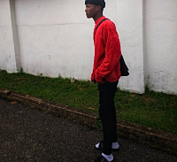

Awodi Emmanuel

Summary
I'm a web developer who loves to solve problems with codes.
Education
- AirForce primary school Victoria Island, Lagos. (2006-2013).
- Nigerian Navy Secondary School Abeokuta Ogun state.(2013-2019)
- Caleb University Imota, Lagos.(2020-2022)
Skills
- Programming ⭐⭐⭐⭐
- Playing video games⭐⭐⭐⭐⭐
- Procastination⭐⭐⭐⭐⭐⭐
Awards and Certifications
- Asst Senior Prefect (July 2013)
- Diploma in Computer Application(August 2016)
- WASSCE O'Level certificate(August 2019)
Other